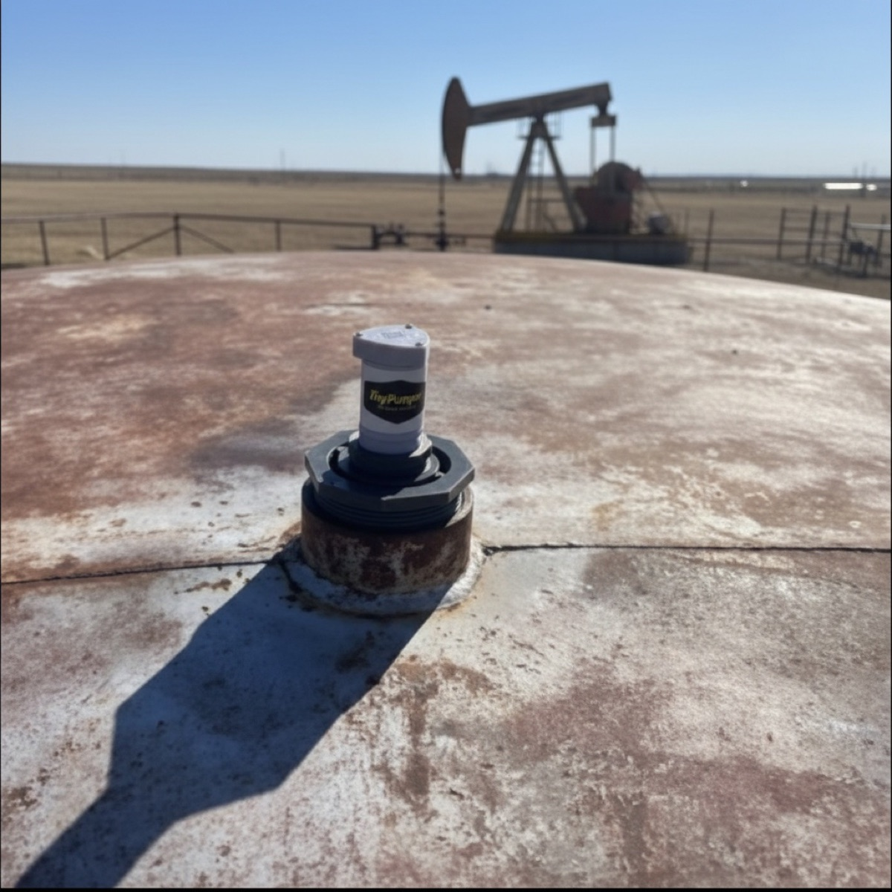

Every producer I talk to has the same ad running somewhere. Pumper wanted. Experience preferred. It’s been up for months.
You know the story because you’re living it. The older hands, the ones who could diagnose a well by the sound it makes or two fingers on the polished rod, are aging out or already gone. COVID wiped out something like a third of the oilfield service labor force, and a lot of those folks never came back. The young guys who might have replaced them found easier money in town. Meanwhile every input on your cost sheet, tubing, rods, fuel, labor, is up 50 to 100 percent from what it was, so the help you can’t find would also cost more than it ever has.
That’s the pumper shortage, and I’ll give it to you straight: it’s not a rough patch. It’s the new shape of the labor market. The industry is not going to recruit its way back to 2014.
But here’s the part almost nobody says out loud. The shortage didn’t create your coverage problem. It exposed one that was always there.
What you actually pay a pumper for
Do an honest accounting of your best hand’s day.
He’s covering 40, 50, maybe 60 leases solo, holding it together with a clipboard and a cell phone. And what does most of that day consist of? Driving. Lease to lease, county to county, an hour of gravel between five minutes of gauging. And on most of those stops, what does he find?
Nothing. The well is pumping. The tank has room. The compressor is humming. He looks, nods, writes it down, and drives to the next one.
Read that again, because it’s the whole problem: the scarcest, most expensive, hardest-to-replace resource in your operation spends the bulk of his day confirming that nothing is wrong. You’re not paying for his forty years of well sense. You’re paying for his odometer. The skill sits in the passenger seat all day while the driving does the work.
The old-timers called it the milk run (the fixed loop you drive whether anybody needs you or not). It made perfect sense for a hundred years, because there was no other way to answer the only question that matters: is everything all right out there? Somebody had to go look. Every well. Every day. Hope is not a strategy, and the route was the only alternative to hope.
That era just ended, and half the patch hasn’t noticed yet.
Why telemetry never fixed this before
The technology to answer “is everything all right?” without a truck has existed for decades. It’s called telemetry, and if you priced it any time in the last twenty years, you know exactly why your wells still get checked by pickup.
As the industry sold it, telemetry was an enterprise project: engineered installs, trenched wire or licensed radio, integrators, IT overhead, and a per-well price tag that only penciled on the biggest producers. For the conventional wells that make up most of this country’s production, the math never worked. Not because the wells didn’t deserve watching. Because the price of watching them was built for somebody else’s balance sheet.
So the industry split in two. The majors got eyes on everything, and everybody else kept driving the loop. Telemetry didn’t fail you. It just never showed up for you.
The day the route becomes optional
Now run the same math with hardware that costs a few hundred bucks a device, one time, and installs itself into your operation in about ten minutes per site. Solar gateway the size of a matchbox. Radar on the tanks, nothing touching the fluid. Pressure at the wellhead. A runtime read on the compressor. Cellular and satellite both included, so the lease past the caliche pit reports in like the one by the highway. One flat monthly rate per location, unlimited sensors.
The reads come in every hour, and between reads the thresholds get checked every few minutes. Which means that before your pumper’s truck ever starts in the morning, the question the milk run existed to answer is already answered, well by well, on his phone.
And the day changes shape. He starts with a plan instead of a loop: two leases flagged overnight, one tank filling faster than usual, one compressor that quit at 3 a.m. He drives to the wells that need hands, does the skilled work only he can do, and skips the twenty stops that only needed eyes. The wells that are fine still got checked, forty times since midnight, by something that doesn’t bill mileage.
That’s the reframe hiding inside the shortage: you didn’t need another driver. You needed to stop spending your best hand on confirmation laps. Same pumper, same wells, twice the ground covered, and the forty years of well sense finally doing well work instead of odometer work.
Your pumper wins too, and that matters more than it used to. The good ones are exhausted, not lazy. And here’s a picture every producer with an older hand will recognize: tank stairs. A man with a bad back and thirty years of well sense, climbing steel stairs and catwalks all day, every day, to look at a level. He doesn’t want to quit pumping. He likes the work. It’s the climbing that’s beating him. A radar sensor on top of that tank checks the level without costing him a single trip up the stairs, and saves the climbs for the days the tank actually needs him.
Handing a stretched-thin hand a day with a plan, fewer dead miles, fewer stairs, and no 2 a.m. surprises he finds out about at 10 is how you keep the pumper you’ve got. Which, in this market, is worth more than the three you can’t hire.
The math the hiring ad can’t beat
A good pumper, if you can find one, runs you a serious number every year, plus the truck, plus the fuel, plus the months of hoping the ad gets answered. Telemetry on a lease runs one flat monthly rate, and the hardware pays for itself the first time it catches a down well before the weekend does.
The judgment, the hands, the well sense, those stay human, and they finally get spent where they earn.
Try it where the windshield time hurts most: the far lease, the one that eats ninety minutes of road for five minutes of looking. Put a gateway and a few sensors on it and run it for 60 days. If it doesn’t earn its keep, send it back for your money back and we’ll pay the return shipping. Every sensor carries a lifetime replacement, no fine print.
The shortage is real, and it isn’t ending. The wells still have to be watched. The only question left is whether the watching keeps costing you a scarce man’s whole day, or an hour of it.
If that question lands, take a look at TinyPumper and take the quiz while you’re there. It takes about a minute. Less time than the drive to your nearest well, and it might be the reason that drive gets rarer.
